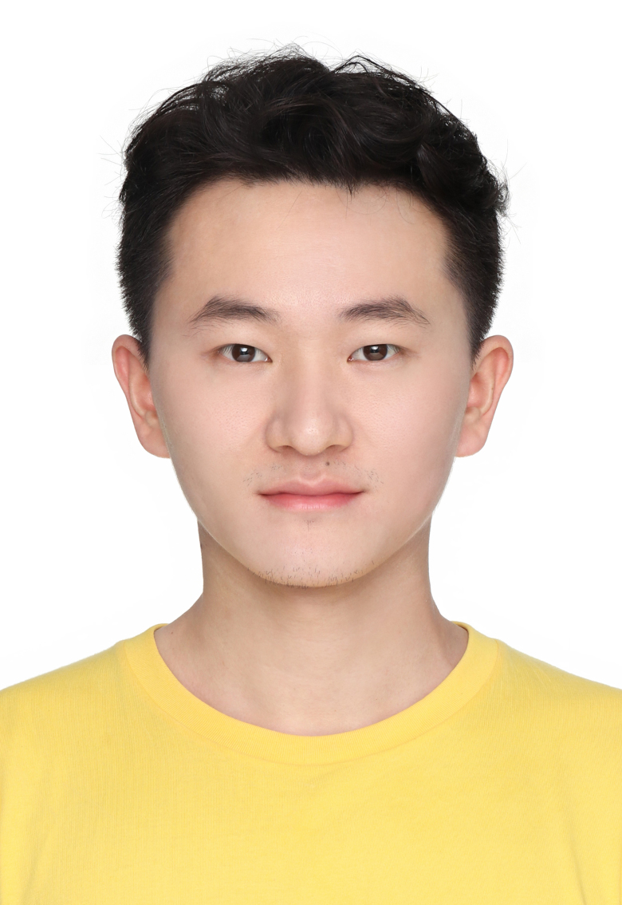

<div class="home">
  <div class="materials-wrap">
    <p>Additional course websites (to update): <a href="https://canvas.illinois.edu/courses/62990">UIUC Canvas</a></p>

    <div class="team-container">
        <div class="team-member">
            
                <div class="info">
                    <h2>Ge Liu</h2>
                    <p>Instructor, Assistant Prof. @ UIUC CS</p>
                    <p>geliu[AT]illinois[dot]edu</p>
                </div>
        </div>
        <div class="team-member">
            
                <div class="info">
                    <h2>Yanru Qu</h2>
                    <p>TA</p>
                    <p>yanruqu2[AT]illinois[dot]edu</p>
                </div>
        </div>
    </div>

    <h2 class="module-header">Course description</h2>
    <p>In this graduate-level course, we will introduce foundational and state-of-the-art machine-learning approaches to key problems in life sciences and biology, with an emphasis on deep learning for molecular engineering. The course is structured into four main modules: functional genomics, protein language models, geometric DL, and protein structure models. We will cover a wide range of DL architectures (CNN, Transformer, GNN, etc.), generative models (e.g., language models and diffusion) and machine learning techniques (supervised, unsupervised, optimization), and discuss their applications to modeling, understanding, and designing the sequence, structure, and functions of genomes and proteins. Students will learn about both theoretical concepts and applications to biological problems, and gain practical experience through implementing solutions to problem sets, reading papers, and conducting final course project.</p>
    
    <h2 class="module-header">Logistics</h2>
    <ul>
        <li>Lecture: Wed/Fri 11:00 - 12:15 in 1302 Siebel Center for Comp Sci</li>
        <li>Office hours: Thursday 3pm-4pm in 3212 Siebel Center for Comp Sci</li>
        <li>TA office hours: to update </li>
    </ul>

    <h2 class="module-header">Grading</h2>
    <p>Grading will be based upon four problem sets containing either programming questions or written questions (40%), a Course Project (35%), reading assignments (20%), and participation (5%). Attendance in lecture is important as the class moves quickly and you will need to be present. You can use three late days for problem set deadlines (or email the course staff).</p>

	<h2 class="module-header">Syllabus and schedule</h2>
    <table class="table">
        <tr class="active"> 
            <th>Date&nbsp;&nbsp;&nbsp;&nbsp;&nbsp;&nbsp;&nbsp;&nbsp;&nbsp;&nbsp;&nbsp;&nbsp;&nbsp;&nbsp;&nbsp;&nbsp;&nbsp;&nbsp;</th><th>Lecture&nbsp;&nbsp;&nbsp;&nbsp;</th><th>Title</th><th>Assignment</th>
        </tr>
        <tr>
            <td>8/27/2025</td>
            <td>Lecture 1</td>
            <td>Logistics and intro</td>
            <td></td>
        </tr>
        <tr>            
            <td>8/29/2025</td>
            <td>Lecture 2</td>
            <td>ML foundations</td>
            <td></td>
            
        </tr>
        <tr>
            <td>9/3/2025</td>
            <td>Lecture 3</td>
            <td>ML foundations</td>
            <td></td>
        </tr>
        <tr>
            <td colspan="4">Module I: Functional Genomics</td>
        </tr>
        <tr>
            <td>9/5/2025</td>
            <td>Lecture 4</td>
            <td>DL for functional genomics I</td>
            <td></td>
        </tr>
        <tr>
            <td>9/10/2025</td>
            <td>Lecture 5</td>
            <td>CNN/ResNet</td>
            <td></td>
        </tr>
        <tr>
            <td>9/12/2025</td>
            <td>Lecture 6</td>
            <td>RNN, LSTM, StateSpaceModel(S4,Mamba,Hyena)</td>
            <td>Reading assignment 1</td>
        </tr>
        <tr>
            <td>9/17/2025</td>
            <td>Lecture 7</td>
            <td>Model uncertainty and interpretability</td>
            <td>Problem set 1 out</td>
        </tr>
        <tr>
            <td>9/19/2025</td>
            <td>Lecture 8</td>
            <td>DL for functional genomics II</td>
            <td></td>
        </tr>
        <tr>
            <td colspan="4">Module II: Protein Language Models</td>
        </tr>
        <tr>
            <td>9/24/2025</td>
            <td>Lecture 9</td>
            <td>Protein sequenece modeling I</td>
            <td></td>
        </tr>

        <tr>
            <td>9/26/2025</td>
            <td>Lecture 10</td>
            <td>Transformer and MLM I</td>
            <td></td>
        </tr>
        <tr>
            <td>10/1/2025</td>
            <td>Lecture 11</td>
            <td>Transformer and MLM II</td>
            <td>Reading assignment 2</td>
        </tr>
        <tr>
            <td>10/3/2025</td>
            <td>Lecture 12</td>
            <td>Protein sequenece modeling II</td>
            <td>Problem set 1 due, Finalize project team-up</td>
        </tr>
        <tr>
            <td>10/8/2025</td>
            <td>Lecture 13</td>
            <td>Protein function prediction (sequence based)</td>
            <td>Problem set 2 out</td>
        </tr>
        <tr>
            <td>10/10/2025</td>
            <td>Lecture 14</td>
            <td>Protein function optimization (sequence based) I</td>
            <td></td>
        </tr>
        <tr>
            <td>10/15/2025</td>
            <td>Lecture 15</td>
            <td>Protein function optimization (sequence based) II</td>
            <td></td>
        </tr>
        <tr>
            <td colspan="4">Module III: Intro to Geometric DL</td>
        </tr>
        <tr>
            <td>10/17/2025</td>
            <td>Lecture 16</td>
            <td>GNN</td>
            <td></td>
        </tr>
        <tr>
            <td>10/22/2025</td>
            <td>Lecture 17</td>
            <td>Intro to Geometric DL for molecular representation I</td>
            <td>Problem set 2 due, Reading assignment 3</td>
        </tr>
        <tr>
            <td>10/24/2025</td>
            <td>Lecture 18</td>
            <td>Intro to Geometric DL for molecular representation II</td>
            <td>Problem set 3 out</td>
        </tr>
        <tr>
            <td colspan="4">Module IV: Protein Structure Models</td>
        </tr>
        <tr>
            <td>10/29/2025</td>
            <td>Lecture 19</td>
            <td>Protein structure prediction I</td>
            <td></td>
        </tr>
        <tr>
            <td>10/31/2025</td>
            <td>Lecture 20</td>
            <td>Protein structure prediction II</td>
            <td>Project proposal due</td>
            <td></td>
        </tr>
        <tr>
            <td>11/5/2025</td>
            <td>Lecture 21</td>
            <td>Folding and inverse folding</td>
            <td>Reading assignment 4</td>
        </tr>
        <tr>
            <td>11/7/2025</td>
            <td>Lecture 22</td>
            <td>Protein interaction, function prediction</td>
            <td></td>
        </tr>
        <tr>
            <td>11/12/2025</td>
            <td>Lecture 23</td>
            <td>Generative models primers: VAE,Diffusion, Flow Matching I</td>
            <td>Problem set 3 due</td>
        </tr>
        <tr>
            <td>11/14/2025</td>
            <td>Lecture 24</td>
            <td>Generative models primers: VAE,Diffusion, Flow Matching II</td>
            <td>Problem set 4, Reading assignment 5 </td>
        </tr>
        <tr>
            <td>11/19/2025</td>
            <td>Lecture 25</td>
            <td>Generative model for protein design I</td>
            <td></td>
        </tr>
        <tr>
            <td>11/21/2025</td>
            <td>Lecture 26</td>
            <td>Generative model for protein design II</td>
            <td></td>
        </tr>
        <tr>
            <td colspan="4">Final projects</td>
        </tr>
        <tr>
            <td>11/26/2025</td>
            <td>No lecture</td>
            <td>Fall break</td>
            <td></td>
        </tr>
        <tr>
            <td>11/28/2025</td>
            <td>No lecture</td>
            <td>Fall break</td>
            <td></td>
        </tr>
        <tr>
            <td>12/3/2025</td>
            <td>Lecture 27</td>
            <td>No lecture</td>
            <td></td>
        </tr>
        <tr>
            <td>12/5/2025</td>
            <td>Lecture 28</td>
            <td>No lecture</td>
            <td></td>
        <tr>
            <td>12/10/2025</td>
            <td>Lecture 29</td>
            <td>Project Presentations</td>
            <td></td>
        </tr>

    </table>

    <h2 class="module-header">Prerequisites</h2>
	<p>Linear Algebra, python programming, intro to ML.</p>


    <h2 class="module-header">Project</h2>
    <!-- TODO: link to project details A detailed project description can be found <a target="_blank" href="assets/final-project-2019.pdf">here</a>. -->
    <p>This subject has a substantial project component. We recommend (but do not require) working on projects in team of 2-3 students. You are free to choose any problem related to the lectures of the course, and develop a deep learning solution.</p>

  </div>
</div>
